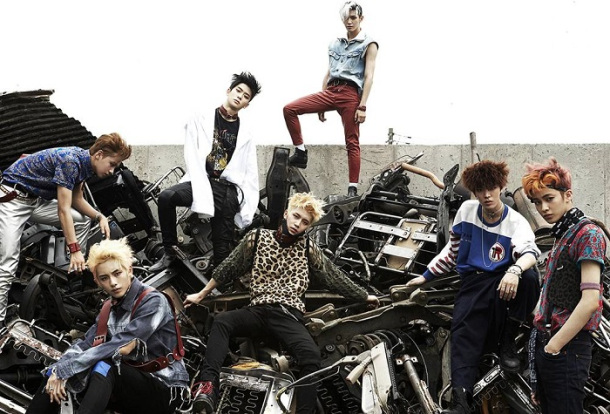
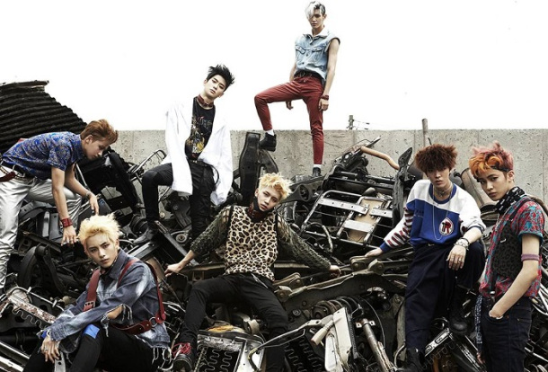
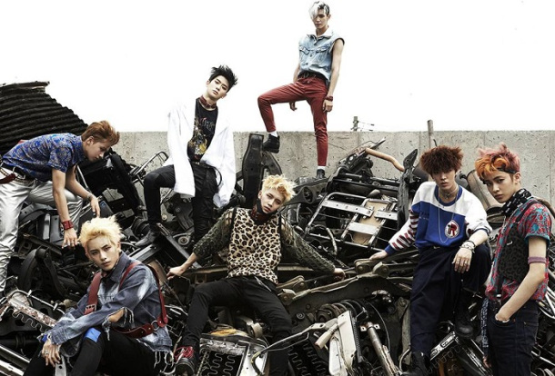

- южнокорейская группа, дебютировавшая в 2016 году под крылом компании S.M. Entertainment. Концепт группы заключается в неограниченном количестве участников. То есть они свободно могут объединяться друг с другом, формируя новые юниты (подгруппы), но при этом оставаться все так же одной группой.
Первый юнит, NCT U, дебютировал 9 апреля 2016 года с двумя синглами в составе шести участников. Этот юнит не является фиксированным, то есть в следующих камбэках количество и состав участников может изменяться абсолютно произвольно. Так, например, в 2018 году было выпущено три песни так же от этого юнита, но уже с другими участниками.
Второй юнит, NCT 127, дебютировал 7 июля 2016 года с мини-альбомом “Fire truck” в составе 7 участников. Второй мини-альбом “Limitless” был выпущен в январе, но уже в составе 9 человек. В июне NCT 127 выпустили третий мини-альбом “Cherry Bomb” так же в составе 9 человек. И так же в мае 2018 года был выпущен японский мини-альбом под названием “Chain”. В составе 10 человек NCT 127 вернулись в октябре, но уже с полноформатным альбомом “Regular-Irregular”. И спустя всего месяц с “Regulate”, но в составе 9 человек. В марте 2019 был выпущен второй японский мини-альбом “Awaken”. В мае мини-альбом “We Are Superhuman”. В обоих камбэках состав участников так же был 9 человек. В основном юнит является фиксированным и участники, именно в этом юните, не меняются, но иногда их количество да.
